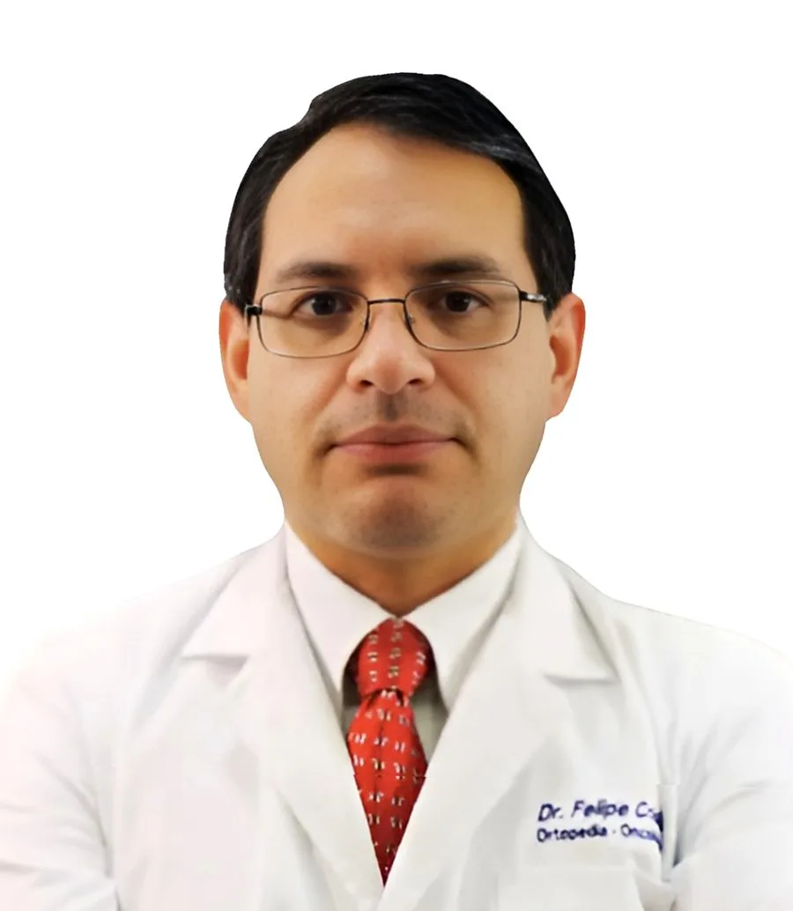

✦ Asistente con IATraumatología y ortopedia oncológica · Quito
Un asistente inteligente le hace las preguntas correctas y ordena sus estudios. Así el doctor y su equipo de consulta preparan la información completa de su caso.
✦ Sitio inteligente
Desde el primer clic lo acompaña una guía inteligente, programada para conducir la conversación como el propio doctor Criollo dirige sus consultas: qué preguntar, en qué orden y qué estudios pedir.
Así la información llega completa, y la cita y el diagnóstico son más efectivos.
✦ Probar la guía inteligenteLa guía no diagnostica ni receta. Reúne la información; el diagnóstico es del doctor.
El área a la que el doctor Criollo dedica su práctica.
Todas sus necesidades de traumatología en un solo lugar.
Evaluación clínica con radiografía, resonancia magnética o ecografía.
Reparación de fracturas, corrección de deformidades y reemplazo articular.
Inmovilización, reducción y cirugía cuando el caso lo requiere.
Evaluación, fisioterapia y rehabilitación. Cirugía si hace falta.
Diagnóstico temprano, antibióticos específicos y cirugía si es necesaria.
Indicación y ajuste de prótesis y aparatos ortopédicos.
Examen físico y valoración de riesgos para detectar problemas a tiempo.
Cirugía, terapia física y seguimiento a largo plazo.
Valoración, inmovilización e intervención quirúrgica si es necesaria.
Cuente su caso, adjunte sus estudios y reciba la respuesta del doctor por escrito. Si hace falta verlo en persona, se lo decimos.
Iniciar ahora →
El doctor
Cirujano ortopedista oncólogo. Se dedica al diagnóstico y tratamiento de tumores musculoesqueléticos y a las reconstrucciones de extremidades de alta complejidad.
Llámenos o escríbanos por WhatsApp.